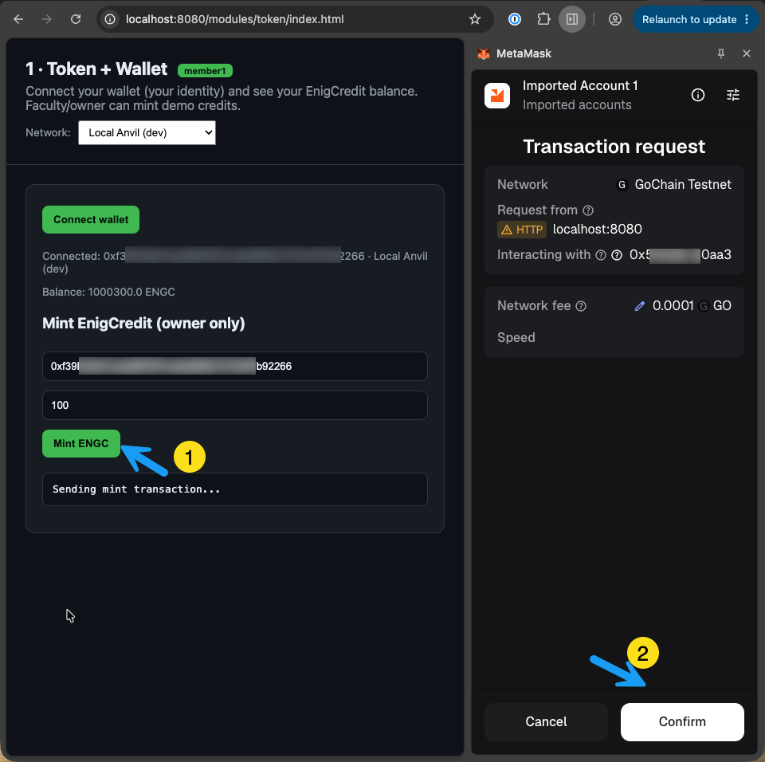
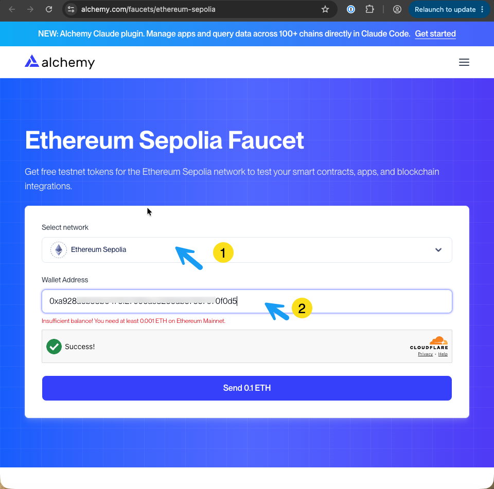
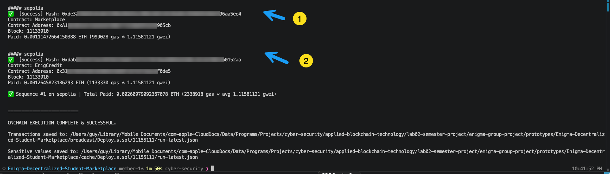
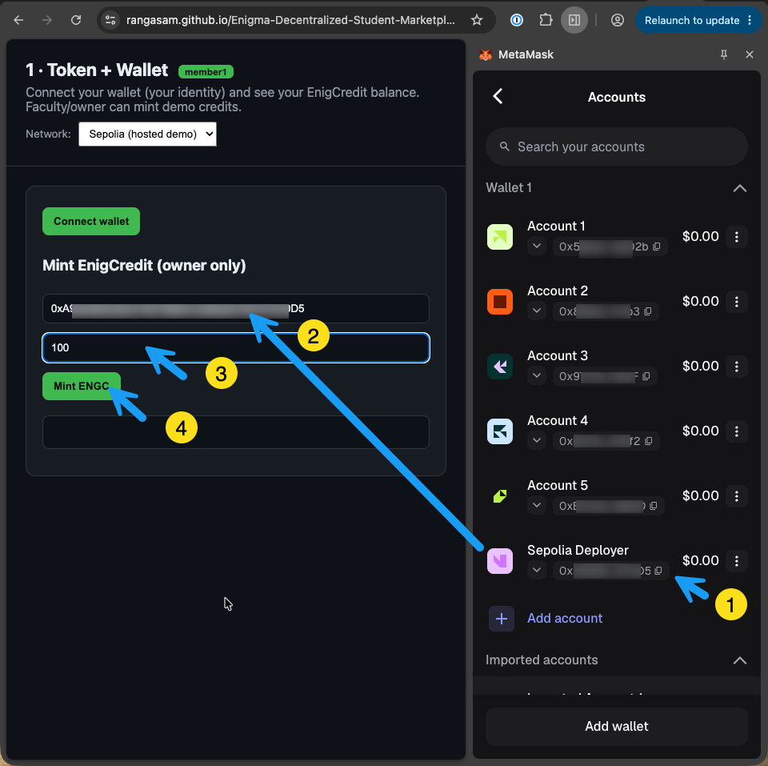
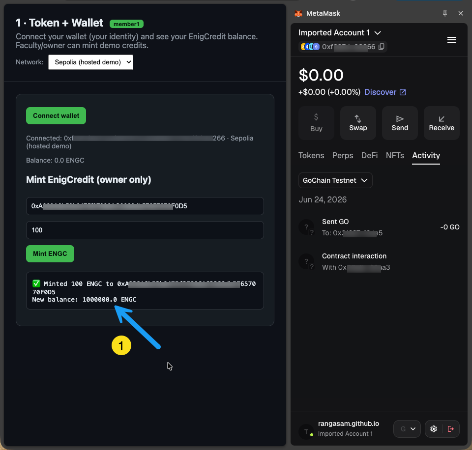

Validating the Marketplace (Slices 1–4) — Local Anvil & Hosted Sepolia
Audience: every team member. Sections A–B validate Slice 1 (the EnigCredit token); sections C–D validate the Slices 2–4 lifecycle (list → buy/escrow → confirm → rate). Both use the same two networks and the same GUI:
Network GUI you use Why Local Anvil (chainId 31337) the page served locally at http://localhost:8080local HTTP ↔︎ local chain — no browser security limits Hosted Sepolia (chainId 11155111) the GitHub Pages site https://<user>.github.io/Enigma-Decentralized-Student-Marketplace/public HTTPS page ↔︎ public HTTPS RPC Golden rule — only the contract owner can
mint. The owner is whoever deployed: on Anvil that's account[0] (0xf39F…2266); on Sepolia it's the wallet you deployed with. A non-ownermintreverts withexecution reverted … CALL_EXCEPTION(theonlyOwnerguard).
A · Local Anvil Network Test
Realistic local-dev flow: run a throwaway chain, deploy, serve the page, drive it with MetaMask.
A1. Start the chain & deploy
# terminal 1 — local chain (accounts pre-funded, deterministic addresses)
anvil
# terminal 2 — deploy from the repo root (account[0] = deployer = owner)
forge script script/Deploy.s.sol:Deploy \
--rpc-url http://127.0.0.1:8545 \
--broadcast \
--sender 0xf39fd6e51aad88f6f4ce6ab8827279cfffb92266 \
--unlockedBecause account[0] deploys in a fixed order, the printed addresses match the anvil block in frontend/src/shared/config.js out of the box (EnigCredit 0x5fbd…80aa3). The constructor mints the 1,000,000 ENGC initial supply to the deployer.
A2. Serve the GUI
cd frontend/src && python3 -m http.server 8080A3. Point MetaMask at the local chain
- Add a network: RPC
http://127.0.0.1:8545, chainId 31337, then import account[0]'s private key (Anvil prints it on startup) as the owner. - ℹ️ MetaMask labels chainId 31337 as "GoChain Testnet" with a "GO" symbol — that's cosmetic (GoChain's testnet shares the chainId). It's still your local Anvil chain; the "GO" gas is fake.
A4. Connect & mint
Open http://localhost:8080/modules/token/index.html, choose "Local Anvil (dev)" in the Network dropdown, Connect wallet (balance shows your ENGC), then fill the mint form and Mint ENGC → MetaMask Confirm.

On success the page prints ✅ Minted … New balance: …. Switch MetaMask to a non-owner account and try again → it reverts with CALL_EXCEPTION (proof the onlyOwner guard works).
✅ Validated: owner mint succeeds, balance updates, non-owner mint is rejected — all on your local chain.
B · Hosted Sepolia Network Test (GitHub Pages)
Same contract and UI on a public testnet, driven through the hosted site. Reads/writes are real on-chain transactions.
B1. A funded deployer wallet
Create a throwaway MetaMask account (this becomes the Sepolia owner) and fund it with Sepolia ETH.
⚠️ Faucet gotcha: the Alchemy faucet requires a mainnet balance — a fresh wallet is rejected with "Insufficient balance! You need at least 0.001 ETH on Ethereum Mainnet."

Use a no-gate faucet instead — pk910 PoW (mine in-browser) or the Google Cloud faucet.
B2. Get a Sepolia RPC (Alchemy)
In your Alchemy app, enable Ethereum Sepolia and copy the Endpoint URL (https://eth-sepolia.g.alchemy.com/v2/<key>). ⚠️ Make sure it says eth-sepolia, not eth-mainnet, and never commit the key.

B3. Deploy to Sepolia
Store the key securely (cast wallet import sepolia-deployer --interactive), then:
export SEPOLIA_RPC_URL="https://eth-sepolia.g.alchemy.com/v2/<key>"
forge script script/Deploy.s.sol:Deploy \
--rpc-url sepolia \
--account sepolia-deployer \
--broadcast
Paste the three printed addresses into the sepolia block of config.js.
B4. Publish the GUI to GitHub Pages
Commit the updated config.js (+ abi.js), then on your fork: Settings → Pages → Source = GitHub Actions, and run the "Deploy Pages" workflow. The app publishes to https://<user>.github.io/Enigma-Decentralized-Student-Marketplace/.
B5. Connect & mint on the hosted site
Open the hosted /modules/token/index.html, choose "Sepolia (hosted demo)", switch MetaMask to Sepolia, and Connect the owner wallet.

Fill the mint form → Mint ENGC → MetaMask Confirm (this spends real Sepolia gas, ~12–15s to confirm).

Confirm independently on Sepolia Etherscan (read owner, totalSupply, balanceOf). A non-owner mint reverts with CALL_EXCEPTION, exactly as on Anvil.
✅ Validated: the live Sepolia contract mints for the owner, rejects non-owners, and the hosted GUI reads/writes it correctly.
C · Marketplace Lifecycle Test (Slices 2–4) — Local Anvil
Slices 2–4 are one flow: Member 2 lists an item → Member 3 escrows the trade → Member 4 records reputation. Validate them as a single lifecycle with three roles: owner (deployer, account[0]), seller (account[1]), buyer (account[2]).
Golden rule — value is escrowed, not sent.
purchaseItempulls the price into the contract; it is released to the seller only on the buyer'sconfirmDelivery, or refunded to the buyer viacancelPurchaseafter the timeout. No party can extract value early.
C1. CLI walkthrough (reproducible — verified)
Start the chain and deploy as in §A1 (addresses match the anvil block of config.js), then set:
RPC=http://127.0.0.1:8545
ENG=0x5FbDB2315678afecb367f032d93F642f64180aa3 # EnigCredit
MK=0xe7f1725E7734CE288F8367e1Bb143E90bb3F0512 # Marketplace
RP=0x9fE46736679d2D9a65F0992F2272dE9f3c7fa6e0 # Reputation
SELLER_K=0x59c6995e998f97a5a0044966f0945389dc9e86dae88c7a8412f4603b6b78690d # account[1]
BUYER_K=0x5de4111afa1a4b94908f83103eb1f1706367c2e68ca870fc3fb9a804cdab365a # account[2]
SELLER=0x70997970C51812dc3A010C7d01b50e0d17dc79C8Slice 2 — seller lists an item (50 ENGC):
cast send $MK 'createListing(string,string,string,uint256,string)' \
"Calc Textbook" "Books" "Good" 50000000000000000000 "" --private-key $SELLER_K --rpc-url $RPC
cast call $MK 'totalListings()(uint256)' --rpc-url $RPC # 1→ listing id 0, status Available. Emits ListingCreated.
Slice 3 — buyer funds, approves, and purchases (escrow):
cast send $ENG 'faucet()' --private-key $BUYER_K --rpc-url $RPC # buyer gets 1,000 ENGC
cast send $ENG 'approve(address,uint256)' $MK 50000000000000000000 --private-key $BUYER_K --rpc-url $RPC
cast send $MK 'purchaseItem(uint256)' 0 --private-key $BUYER_K --rpc-url $RPC
cast call $ENG 'balanceOf(address)(uint256)' $MK --rpc-url $RPC # 50e18 held in escrow→ status Pending; the 50 ENGC now sits in the Marketplace contract (escrow). Emits ItemPurchased. (One-step alternative: purchaseWithPermit — no separate approve.)
Slice 3 — buyer confirms delivery → seller is paid:
cast send $MK 'confirmDelivery(uint256)' 0 --private-key $BUYER_K --rpc-url $RPC
cast call $ENG 'balanceOf(address)(uint256)' $SELLER --rpc-url $RPC # 50e18 → seller→ status Sold; escrow released to the seller. Emits DeliveryConfirmed.
Slice 4 — buyer rates the seller (1–5, once):
cast send $RP 'rateUser(uint256,uint8)' 0 5 --private-key $BUYER_K --rpc-url $RPC
cast call $RP 'getAverageRating(address)(uint256,uint256)' $SELLER --rpc-url $RPC # (5, 1)
cast call $RP 'getAverageRatingScaled(address)(uint256)' $SELLER --rpc-url $RPC # 500 = 5.00 ★→ RatingSubmitted; a second rateUser in the same direction reverts AlreadyRated, and a non-buyer/seller caller reverts Unauthorized.
✅ Validated (verified output): list → escrow (50 held) → confirm (50 to seller, Sold) → 5.00★. Variations: seller
cancelListingon an Available item; buyercancelPurchaseafterCANCELLATION_TIMEOUT(refund); non-buyerrateUser→Unauthorized.
C2. GUI walkthrough (local page)
Serve the GUI (§A2) and point MetaMask at Anvil (§A3). Use three imported Anvil accounts (owner, seller, buyer); fund the buyer with Get 1,000 ENGC (Slice-1 faucet) first.
Listings (
/modules/listings/) — as seller, create a listing (title, category, condition, price, image) → it appears under Available.
Escrow / Trade (
/modules/market/) — as buyer, Approve then Purchase (or one-step permit) → listing moves to Pending; then Confirm delivery → Sold, seller paid.

Reputation (
/modules/reputation/) — as buyer, submit a 1–5★ rating → the seller's average updates.
D · Marketplace Lifecycle Test (Slices 2–4) — Hosted Sepolia
Same flow on the live site, driven entirely through the GUI — every action is a real Sepolia transaction (~12–15s, real gas).
D1. Roles & funding
- Seller / buyer: any two Sepolia accounts. Each needs a little Sepolia ETH for gas; the buyer also needs ENGC — click Get 1,000 ENGC (faucet) on the token page, or use a pre-funded demo wallet.
- No deploy/serve needed — the contracts are already live (
config.jssepoliablock) and published on Pages.
D2. Run the lifecycle
On the hosted site, switch MetaMask to Ethereum Sepolia and set the page's network dropdown to Sepolia (hosted demo) for each step:
Listings — seller creates a listing → confirm in MetaMask → appears under Available.

Escrow / Trade — buyer Approve + Purchase → Pending; then Confirm delivery → Sold.

Reputation — buyer rates the seller 1–5★ → average updates.


Verify independently on Sepolia Etherscan: the Marketplace holds the price while Pending, transfers it to the seller on Sold, and Reputation records the rating.
✅ Validated: the full list → escrow → confirm → rate lifecycle works on the public testnet through the hosted GUI, with on-chain escrow custody you can verify on Etherscan.
Why Anvil uses the local page (not the hosted URL)
The hosted page is served over HTTPS; the frontend reads balances via a direct call to the network's rpcUrl. Sepolia's RPC is public HTTPS, so the hosted site reaches it fine. Anvil's RPC is http://127.0.0.1:8545 — the browser's Private Network Access policy blocks a public HTTPS page from calling a local/loopback address, so balance reads fail. That's why Anvil → local page, Sepolia → hosted page.
See also: PROCEDURES.md (§A5b Anvil CLI walkthrough, §B3a Alchemy RPC) and CONTRIBUTING.md (PR workflow).